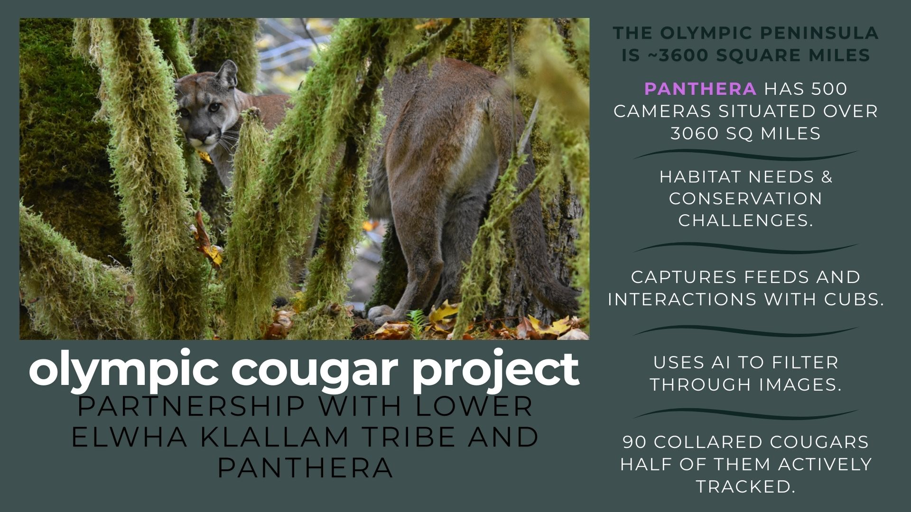

Me and my family T.J., Ellaina, Julia, Olivia, Everleigh, and Fern!
Owned and managed by Greater Peninsula Conservacy
Seminar Sponsored by Kitsap Environmental Coalition
At the start of the class, I saw it as a an academic requirement to fulfil by contributing to the community - I knew I had to plan out the rest of the term to make sure I was able to complete my hours. By the end, I came to understand it as a reciprocal process—a chance to apply my knowledge in real-world settings while gaining deeper insights about myself and other while meeting some of the demands of our local community. It transformed into a bridge between education and meaningful action.
I learned a lot of interesting facts about salmon and their migration, the olympic cougar population, and while I already had some knowledge of invasives and native plants, i didn't quite understand the signifigance of natural decomposing process and how important leaving that material in place (aside from my own garden) material... what stood out most was:
The most meaningful experience was hard to nail down, I enjoyed engaging with the folks at Great Peninsula Conservacy and learning about how they came to be part of the organization and things they do outside of GPC (lots of things in common!) and I have already seen some of those folks out in the community. I am really curious in the cougar population on the peninsula and I feel like as we continue to do research we will have a better understanding of necessary conservation efforts to address their special struggles. Volunteering at Salmon Days filled my heart learning from other class members, volunteers, and the community in an enriching experience where you get to see real time and ralley with the salmon in Chico Creek. Also experiencing the direct impact of the knowlegde I have gained through this class was incredibly rewarding.